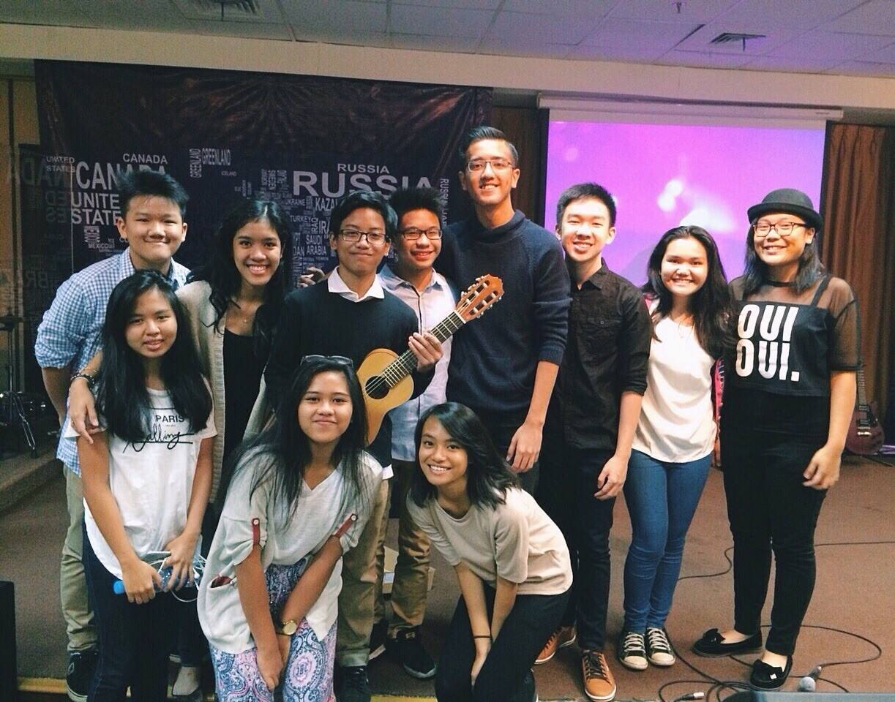

Background
I grew up in Jakarta, Indonesia. In Indonesia, I attended a small British/American-curricula school.
Being both Canadian and Indonesian, I knew that I have always wanted to further my studies in Canada, to avoid expensive international student fees elsewhere. After finishing Grade 11 in Indonesia, I decided to move to Canada and graduate high school here instead. Little did I know at that time that this decision would change the course of my entire life.
So here I am!
Hobbies
- Software
- Music
- TV Shows
- Exercise
Before university, I had minimal exposure to software development. My previous high school in Indonesia offered 0 technology courses. Hence, when I migrated to Canada, I was not allowed to take Grade 12 Computer Science. But, upon stumbling to programming in university, I realized I loved it and that this is the career that I will pursue.
My first language was C++, which I learned in a 1A course. During the winter, to apply the Computer Science theory that I learned in school, I decided to try making a game in Python with the Pygame module. I was bored to death. I felt that I was not creating something that could benefit other people aside from providing entertainment. Then, I decided to try out mobile development using Android Studio (which did not quite make sense since I own an iPhone lol!). I did not really enjoy it. I felt that the scope was too narrow. Then, I ventured into web development during the winter break for the first time. I had 0 knowledge about HTML and CSS. I previously bought a Python book, that had a chapter covering web application development using Django. Hence came my first website (more specifically, web app), which was in Python using the Django framework. I picked up HTML and CSS as I was making the web application. Looking back, it truly was odd. People usually start web development by learning the client-side languages first and then moving on to the server-side languages and frameworks. But, it was the other way around for me. Though, learning Django made me love web development.
Check out my software projects, from my successful ones to my not-so-successful ones, here. (and the inspirations behind them too!)
I love listening to music, playing music, and writing music.
I sing, I play the piano, and I play the guitar.
I started playing classical piano from the age of 7 (*cough* Asian! *cough*). Although I never really enjoyed playing classical music, playing the piano from a very young age gave me a good foundation in the fundamentals of music. When I was 11, I started singing. This was completely out of the blue because barely any of my family sings. When I was 14, I taught myself how to play the guitar. I generally do not play anything else aside from chords because I use my guitar primarily to accompany vocals.
I used to lead music band for two years back in high school.
As for my taste in music, I have no specific favourite genre, but most of the songs I listen to most range within Pop and/or R&B. I do enjoy some 80s, 90s, early 2000s songs, as well as some musicals. It's really hard to encapsulate my favorite genres because it's all over the place! Check out some songs I've written and produced here.
I find that binge-watching is worth mentioning as a hobby, just because it's been my thing for a long time. Most of the TV series I watch revolve around crime and murder. My TV series are seasonal and highly tentative. But, right now, these are some good ones that I am watching:
- How To Get Away With Murder
- Quantico
- Stranger Things
Co-op is awesome due to the fact that after work, there really isn't anything much to do. After a few months into co-op, I've been pretty consistent with lifting again and hope to continue this into my next study term. Hopefully, it works out!